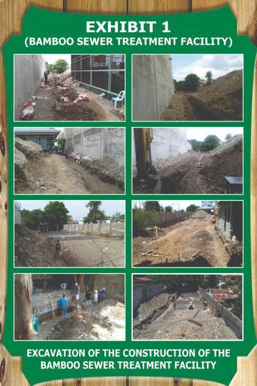
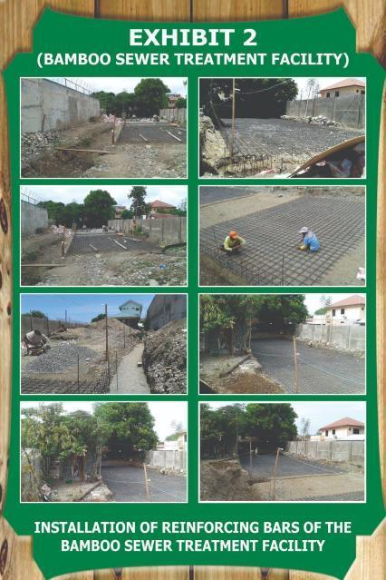
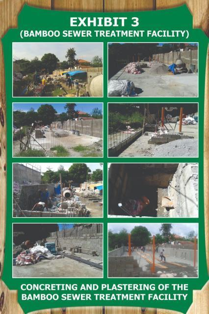
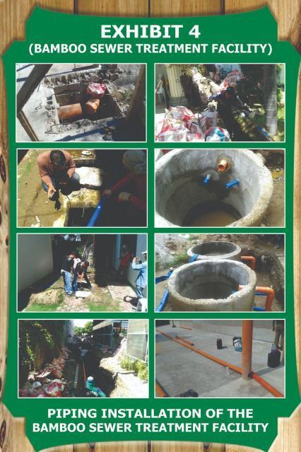
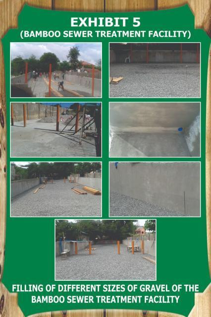
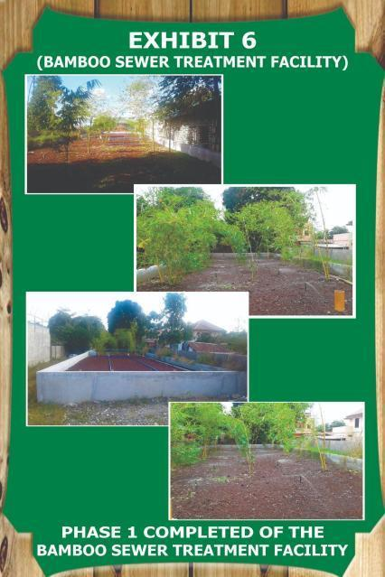

| Bamboo Sewer Treatment Plant (BSTP) Facilities & Propagation | ||
|---|---|---|
| Propagation & Setup | Filtration & Roots | Canopy & Stabilization |
|
 Bayug Bamboo cuttings selection
|
 Active root structures for soil filtration
|
 Rainwater feed pipe system
|
|
 Erosion control and soil stabilization stands
|
 Growth propagation and nursery zone
|
 Mature bamboo filtration canopy area
|
| Bamboo Sewer Treatment Plan | ||
The Bamboo Sewer Treatment Plant (BSTP) at Urdaneta City University represents an innovative, nature-based solution for wastewater treatment, fully aligned with the UI GreenMetric World University Rankings, particularly under the Water (WR), Waste (WS), and Setting & Infrastructure (SI) indicators. This system integrates ecological processes with engineering design, demonstrating the University’s commitment to sustainable and environmentally responsible campus infrastructure.
The BSTP utilizes Bayug Bamboo, a species identified by the Department of Environment and Natural Resources, as a key component of the treatment system. According to available data, Bayug Bamboo can grow up to an average height of 15 meters, with a culm diameter ranging from 4.5 to 10 cm, internode lengths of 24–26 cm, and leaves reaching up to 21 cm in length. Its structural characteristics, including persistent culm sheaths and the development of aerial roots on lower nodes, make it highly suitable for use in sustainable wastewater treatment and ecological engineering applications. The plant is propagated through culm cuttings, ensuring efficient and scalable cultivation within the system.
A key feature of the BSTP is its ability to collect and utilize rainwater, which is then used to irrigate the bamboo. This closed-loop system not only supports plant growth but also enhances water efficiency and reduces reliance on external water sources. By integrating natural processes into wastewater management, the system contributes to the sustainable treatment and reuse of water resources on campus.
From an environmental perspective, bamboo plays a crucial role due to its high carbon sequestration capacity, making it an effective natural tool in mitigating climate change. Through the BSTP, UCU enhances carbon absorption, improves air quality, and supports soil stabilization. The extensive root system of bamboo helps reduce soil erosion while also contributing to improved soil structure and nutrient cycling. Additionally, the presence of bamboo promotes biodiversity, providing habitat and ecological balance within the campus environment.